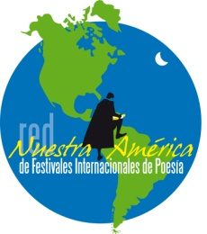

En esta hora de dolor por la muerte del presidente Chávez, los poetas que integramos la Red Nuestra América de Festivales Internacionales de Poesía de América Latina y el Caribe, expresamos nuestras más profundas condolencias a los poetas y por extensión a todo el pueblo venezolano.
Estamos seguros de que lo mismo sienten los demás poetas que en todo el planeta integramos el Movimiento Poético Mundial, quienes hemos visto con admiración el renacimiento de los sueños libertarios de Nuestra América asumido con impresionante claridad en toda su magnitud por el entrañable hijo de Bolívar.
Con la seguridad de que Venezuela seguirá adelante construyendo una sociedad más justa y solidaria como el más importante legado del líder bolivariano, y paradigma de la Patria Grande soñada por los padres fundadores de nuestra independencia, sepan que en esta hora amarga –pero llena de certidumbre y esperanza– estamos junto a ustedes.
Havana, 6 Di febbraio 2013.
Poetas de la Red Nuestra América:
Alex Pausides (Festival internazionale di poesia dell'Avana)
Fernando Rendón (Festival Internacional de Poesía de Medellín)
Pablo Armando Fernández (Premio nacional de Literatura, Cuba)
César López, (Premio nazionale di letteratura, Cuba)
Aitana Alberti (Cátedra Rafael Alberti, Universidad de La Habana)
Oscar Saavedra (Proyecto Descentralización Poética –Cile)
Roberto Reséndiz Carmona (Encuentro Internacional de Poetas –Zamora, Messico)
Norma Cardenas Zurita (Encuentro de Poesia “Carlos Pellicer” –Tabasco, Messico)
Norberto Salinas (Festival Internacional de Poesía de Costa Rica)
celeste Alba Iris(Encuentro Los Santos Días de la Poesía –Tamaulipas, Messico)
Siomara España (Festival de Poesía–Guayaquil, Ecuador)
Francisco Navarro (Proyecto Poesía Cuesta Arriba –Messico)
Roberto Bianchi (Encuentro Internacional de Escritores ABRACE –Uruguay/Brasil)
Nina Reis (Encuentro Internacional de Escritores ABRACE –Uruguay/Brasil)
José Ramón Sánchez (Revista Literaria La Noria, Santiago de Cuba)
Oscar Cruz (Revista Literaria La Noria, Santiago de Cuba)
Jorge Bousoño (Portal ALAS Cuba)
Luis Alfredo Vaillant (Proyecto PIOTAI para la Infancia)
Lismeidys de La Paz Díaz (Festival de Poesía “Itaca”, San José de las Lajas, Cuba)
Ricardo Alberto Pérez (Laboratorio Internacional de Escrituras de La Habana)
Carmen González (Laboratorio Internacional de Escrituras de La Habana)
Malene Alfonso (CubaPoesía itinerante)
Jesus Sama (CubaPoesía itinerante)
Pedro López Cerviño (Coleción SurEditores, Cuba)
Fidel Díaz Castro (Revista El Caimán Barbudo)
Cristian uccelli (Finalista del Premio Casa de las Américas, SurEditores, Ecuador)
Winston Orrillo (Premio Nacional de Cultura del Perú, Universidad Nacional Mayor de San Marcos, Lima, Perù)

No estoy inscripto como poeta o escritor, solo soy un autodidacta que expreso los sentimientos en momentos tan tristes y dolorosos como estos para Cuba, Venezuela y la patria grande. Chavez representa para mi una luz continuadora de los sentimientos martianos de nuestro comandante en Jefe.
En este momento de dolor , lo expreso con el siguiente trabajo:
“VIVIRÁS POR SIEMPRE”
¡ Oh Chávez!
Haz despertado los pueblos de américa, los pueblos oprimidos, los pueblos de la patria grande.
Tu vida y tu legado renacen en los hijos de américa, en los revolucionarios, en los amantes de la paz, en los que reclaman libartad, en los que sueñan por un mundo mejor.
Hoy tú cuerpo se convierte en ideas, en esperanzas, se convierte en millones de seres humanos, se multiplica entre nosotros.
Las lágrimas que por ti hemos derramado hoy, llenarán un océano de unidad, será el puente de la amistad, será el abrazo fraterno de los revolucionarios.
¡ Oh Chávez!
Eres tan nuestro como nosotros mismos, eres un hijo de Fidel, eres un soñador despierto, eres un visionario sin fronteras.
Quedarás como guía de la grandeza, colmarás las grandes multitudes, ondearás en nuestros actos y permanecerás luciendo por tu ejemplo.
Ahora se llorará por ti, mañana y siempre, serás un legendario guerrillero, serás el humilde comandante –presidente.
Harás brillar la luz, serás la fe, serás el ídolo, serás tu propio pueblo.
¡ Oh Chávez!
Para que llorar, si morir por la patria es vivir, si ofrendar la vida por el mundo y su bienestar, es hacer caminar , es hacer cantar , es hacer reir, es cultivar el amor , es defender al hombre, es la justicia demostrada, es la esperanza y es el honor.
¡ Oh Chávez!
No morirás, serás eterno entre nosotros.
Manuel Rodríguez Rendón
6 Marzo di 2013.
Sancti spíritus , Cuba